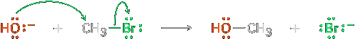
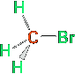
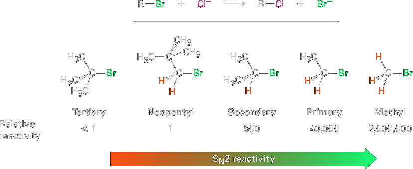
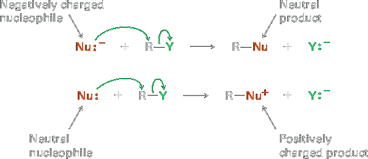
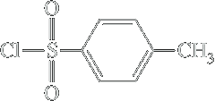
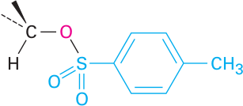

The SN2 Reaction
In every chemical reaction, there is a direct relationship between the rate at which the reaction occurs and the concentrations of the reactants. When we measure this relationship, we measure the kinetics of the reaction. For example, let’s look at the kinetics of a simple nucleophilic substitution—the reaction of CH3Br with OH− to yield CH3OH plus Br−
At a given temperature, solvent, and concentration of reactants, the substitution occurs at a certain rate. If we double the concentration of OH−, the frequency of encounter between the reaction partners doubles and we find that the reaction rate also doubles. Similarly, if we double the concentration of CH3Br, the reaction rate again doubles. We call such a reaction, in which the rate is linearly dependent on the concentrations of two species, a second-order reaction. Mathematically, we can express this second-order dependence of the nucleophilic substitution reaction by setting up a rate equation. As either [RX] or [OH−] changes, the rate of the reaction changes proportionately.
Reaction rate = Rate of disappearance of reactant = k ⋅ [RX] ⋅ [OH−]
A mechanism that accounts for both the inversion of configuration and the second-order kinetics that are observed with nucleophilic substitution reactions was suggested in 1937 by the British chemists E. D. Hughes and Christopher Ingold, who formulated what they called the SN2 reaction—short for substitution, nucleophilic, bimolecular. (Bimolecular means that two molecules, nucleophile and alkyl halide, take part in the step whose kinetics are measured.)
The essential feature of the SN2 mechanism is that it takes place in a single step without intermediates when the incoming nucleophile reacts with the alkyl halide or tosylate (the substrate) from a direction opposite the group that is displaced (the leaving group). As the nucleophile comes in on one side of the substrate and bonds to the carbon, the halide or tosylate departs from the other side, thereby inverting the stereochemical configuration. The process is shown in Figure 1 for the reaction of (S)-2-bromobutane with OH− to give (R)-2-butanol.
In SN2, bond breaking and bond forming occur simultaneously. Thus departure of the leaving group is assisted by the incoming nucleophile.
The mechanism proposed by Hughes and Ingold is fully consistent with experimental results, explaining both stereochemical and kinetic data. Thus, the requirement for backside approach of the entering nucleophile from a direction 180° away from the departing X group causes the stereochemistry of the substrate to invert, much like an umbrella turning inside out in the wind. The Hughes–Ingold mechanism also explains why second-order kinetics are found: the SN2 reaction occurs in a single step that involves both alkyl halide and nucleophile. Two molecules are involved in the step whose rate is measured.
Characteristics of the SN2 Reaction
Now that we know how SN2 reactions occur, we need to see how they can be used and what variables affect them. Some SN2 reactions are fast, and some are slow; some take place in high yield and others in low yield. Understanding the factors involved can be of tremendous value. Let’s begin by recalling a few things about reaction rates in general. The rate of a chemical reaction is determined by the activation energy ΔG‡, the energy difference between reactant ground state and transition state. A change in reaction conditions can affect ΔG‡ either by changing the reactant energy level or by changing the transition-state energy level. Lowering the reactant energy or raising the transition-state energy increases ΔG‡ and decreases the reaction rate; raising the reactant energy or decreasing the transition-state energy decreases ΔG‡ and increases the reaction rate (Figure 2). We’ll see examples of all these effects as we look at SN2 reaction variables.
The Substrate: Steric Effects in the SN2 Reaction
The first SN2 reaction variable to look at is the structure of the substrate. Because the SN2 transition state involves partial bond formation between the incoming nucleophile and the alkyl halide carbon atom, it seems reasonable that a hindered, bulky substrate should prevent easy approach of the nucleophile, making bond formation difficult. In other words, the transition state for reaction of a sterically hindered substrate, whose carbon atom is “shielded” from approach of the incoming nucleophile, is higher in energy and forms more slowly than the corresponding transition state for a less hindered substrate (Figure 3).
| (a)  Bromomethane | (b)  Bromoethane |
(c)  2-Bromopropane | (d)  2-Bromo-2-methylpropane |
As shown above, the difficulty of nucleophile approach increases as the three substituents bonded to the halo-substituted carbon atom increase in size. Methyl halides are by far the most reactive substrates in SN2 reactions, followed by primary alkyl halides such as ethyl and propyl. Alkyl branching at the reacting center, as in isopropyl halides (2°), slows the reaction greatly, and further branching, as in tertbutyl halides (3°), effectively halts the reaction. Even branching one carbon removed from the reacting center, as in 2,2-dimethyl propyl (neopentyl) halides, greatly slows nucleophilic displacement. As a result, SN2 reactions occur only at relatively unhindered sites and are normally useful only with methyl halides, primary halides, and a few simple secondary halides. Relative reactivities for some different substrates are as follows:
Vinylic halides (R2C=CRX) and aryl halides are not shown on this reactivity list because they are unreactive toward SN2 displacement. This lack of reactivity is due to steric factors: the incoming nucleophile would have to approach in the plane of the carbon–carbon double bond and burrow through part of the molecule to carry out a backside displacement.

The Nucleophile
Another variable that has a major effect on the SN2 reaction is the nature of the nucleophile. Any species, either neutral or negatively charged, can act as a nucleophile as long as it has an unshared pair of electrons; that is, as long as it is a Lewis base. If the nucleophile is negatively charged, the product is neutral; if the nucleophile is neutral, the product is positively charged.
A wide array of substances can be prepared using nucleophilic substitution reactions. In fact, we’ve already seen examples in previous chapters. The reaction of an acetylide anion with an alkyl halide discussed in Section 9.8, for instance, is an SN2 reaction in which the acetylide nucleophile displaces a halide leaving group.
| R−C≡C:− | + | CH3Br | SN2 ⟶ reaction | R−C≡C−CH3 | + | Br− |
Table 1 lists some nucleophiles in the order of their reactivity, shows the products of their reactions with bromomethane, and gives the relative rates of their reactions. Clearly, there are large differences in the rates at which various nucleophiles react.
What are the reasons for the reactivity differences observed in Table 1? Why do some reactants appear to be much more “nucleophilic” than others? The answers to these questions aren’t straightforward. Part of the problem is that the term nucleophilicity is imprecise. The term is usually taken to be a measure of the affinity of a nucleophile for a carbon atom in the SN2 reaction, but the reactivity of a given nucleophile can change from one reaction to the next. The exact nucleophilicity of a species in a given reaction depends on the substrate, the solvent, and even the reactant concentrations. Detailed explanations for the observed nucleophilicities aren’t always simple, but some trends can be detected in the data of Table 11.1.
Nucleophilicity roughly parallels basicity when comparing nucleophiles that have the same reacting atom. Thus, OH− is both more basic and more nucleophilic than acetate ion, CH3CO2−, which in turn is more basic and more nucleophilic than H2O. Since “nucleophilicity” is usually taken as the affinity of a Lewis base for a carbon atom in the SN2 reaction and “basicity” is the affinity of a base for a proton, it’s easy to see why there might be a correlation between the two kinds of behavior.
Nucleophilicity usually increases going down a column of the periodic table. Thus, HS2 is more nucleophilic than HO−, and the halide reactivity order is I− > Br− > Cl−. Going down the periodic table, elements have their valence electrons in successively larger shells where they are successively farther from the nucleus, less tightly held, and consequently more reactive. The matter is complex, though, and the nucleophilicity order can change depending on the solvent.
Negatively charged nucleophiles are usually more reactive than neutral ones. As a result, SN2 reactions are often carried out under basic conditions rather than neutral or acidic conditions.
| Nu:− + CH3Br ⟶ CH3Nu + Br− | ||||
|---|---|---|---|---|
| Nucleophile | Product | Relative rate of reaction | ||
| Formula | Name | Formula | Name | |
| H2O | Water | CH3OH2+ | Methylhydronium ion | 1 |
| CH3CO2− | Acetate | CH3CO2CH3 | Methyl acetate | 500 |
| NH3 | Ammonia | CH3NH3+ | Methylammonium ion | 700 |
| Cl− | Chloride | CH3Cl | Chloromethane | 1000 |
| HO− | Hydroxide | CH3OH | Methanol | 10,000 |
| CH3O− | Methoxide | CH3OCH3 | Dimethyl ether | 25,000 |
| I− | Iodide | CH3I | Iodomethane | 100,000 |
| −CN | Cyanide | CH3CN | Acetonitrile | 125,000 |
| HS− | Hydrosulfide | CH3SH | Methanethiol | 125,000 |
The Leaving Group
Still another variable that can affect the SN2 reaction is the nature of the group displaced by the incoming nucleophile. Because the leaving group is expelled with a negative charge in most SN2 reactions, the best leaving groups are those that best stabilize the negative charge in the transition state. The greater the extent of charge stabilization by the leaving group, the lower the energy of the transition state and the more rapid the reaction. But as we saw in Section 2.8, those groups that best stabilize a negative charge are also the weakest bases. Thus, weak bases such as Cl2, Br2, and tosylate ion make good leaving groups, while strong bases such as OH− and NH2− make poor leaving groups.
| OH−, NH2−, OR− | F− | Cl− | Br− | I− | TosO− | ||
| Relative reactivity | <<1 | 1 | 200 | 10.000 | 30.000 | 60.0000 | |
|---|---|---|---|---|---|---|---|
| Leaving group reactivity ⟶ | |||||||
It’s just as important to know which are poor leaving groups as to know which are good, and the preceding data clearly indicate that F−, HO−, RO−, and H2N− are not displaced by nucleophiles. In other words, alkyl fluorides, alcohols, ethers, and amines do not typically undergo SN2 reactions. To carry out an SN2 reaction with an alcohol, it’s necessary to convert the −OH into a better leaving group. This, in fact, is just what happens when a primary or secondary alcohol is converted into either an alkyl chloride by reaction with SOCl2 or an alkyl bromide by reaction with PBr3 (Section 10.5)
Alternatively, an alcohol can be made more reactive toward nucleophilic substitution by treating it with para-toluenesulfonyl chloride to form a tosylate. As noted previously, tosylates are even more reactive than halides in nucleophilic substitutions. Note that tosylate formation does not change the configuration of the oxygen-bearing carbon because the C—O bond is not broken.
R2CH—O |  Tosyl chloride ⟶ Ether, pyridine |  A tosylate |
The one general exception to the rule that ethers don’t typically undergo SN2 reactions occurs with epoxides, the three-membered cyclic ethers that we saw in Section 8.7. Epoxides, because of the angle strain in the three-membered ring, are much more reactive than other ethers. They react with aqueous acid to give 1,2-diols, as we saw in Section 8.7, and they react readily with many other nucleophiles as well. Propene oxide, for instance, reacts with HCl to give 1-chloro-2-propanol by SN2 backside attack on the less hindered primary carbon atom. We’ll look at the process in more detail studying ethers
The Solvent
The rates of SN2 reactions are strongly affected by the solvent. Protic solvents— those that contain an −OH or −NH group—are generally the worst for SN2 reactions, while polar aprotic solvents, which are polar but don’t have an −OH or −NH group, are the best.
Protic solvents, such as methanol and ethanol, slow down SN2 reactions by solvation of the reactant nucleophile. The solvent molecules hydrogen bond to the nucleophile and form a cage around it, thereby lowering its energy and reactivity.
In contrast, polar aprotic solvents increase the rates of SN2 reactions by raising the ground-state energy of the nucleophile. Acetonitrile (CH3CN), dimethylformamide [(CH3)2NCHO, abbreviated DMF], dimethyl sulfoxide [(CH3)2SO, abbreviated DMSO], and hexamethylphosphoramide {[(CH3)2N]3PO, abbreviated HMPA} are particularly useful. These solvents can dissolve many salts because of their high polarity, but they tend to solvate metal cations rather than nucleophilic anions. As a result, the bare unsolvated anions have a greater nucleophilicity and SN2 reactions take place at correspondingly faster rates. For instance, a rate increase of 200,000 has been observed on changing from methanol to HMPA for the reaction of azide ion with 1-bromobutane.
| CH3CH2CH2CH2−Br | N3− | ⟶ | CH3CH2CH2CH2−N3 | + | Br− | ||
| Solvent | CH3OH | H2O | DMSO | DMF | CH3CN | HMPA | |
|---|---|---|---|---|---|---|---|
| Relative reactivity | 1 | 7 | 1300 | 1300 | 2800 | 5000 | 200000 |
| Solvent reactivity ⟶ | |||||||
A Summary of SN2 Reaction Characteristics
The effects on SN2 reactions of the four variables—substrate structure, nucleophile, leaving group, and solvent—are summarized in the following statements and in the energy diagrams of Figure 11.7:
| Substrate | Steric hindrance raises the energy of the SN2 transition state, increasing ΔG‡ and decreasing the reaction rate (Figure 11.7a). As a result, SN2 reactions are best for methyl and primary substrates. Secondary substrates react slowly, and tertiary substrates do not react by an SN2 mechanism. |
|---|---|
| Nucleophile | Basic, negatively charged nucleophiles are less stable and have a higher ground-state energy than neutral ones, decreasing ΔG‡ and increasing the SN2 reaction rate (Figure 11.7b). |
| Leaving group | Good leaving groups (more stable anions) lower the energy of the transition state, decreasing ΔG‡ and increasing the SN2 reaction rate (Figure 11.7c). |
| Solvent | Protic solvents solvate the nucleophile, thereby lowering its ground-state energy, increasing ΔG‡, and decreasing the SN2 reaction rate. Polar aprotic solvents surround the accompanying cation but not the nucleophilic anion, thereby raising the groundstate energy of the nucleophile, decreasing ΔG‡, and increasing the reaction rate (Figure 11.7d). |